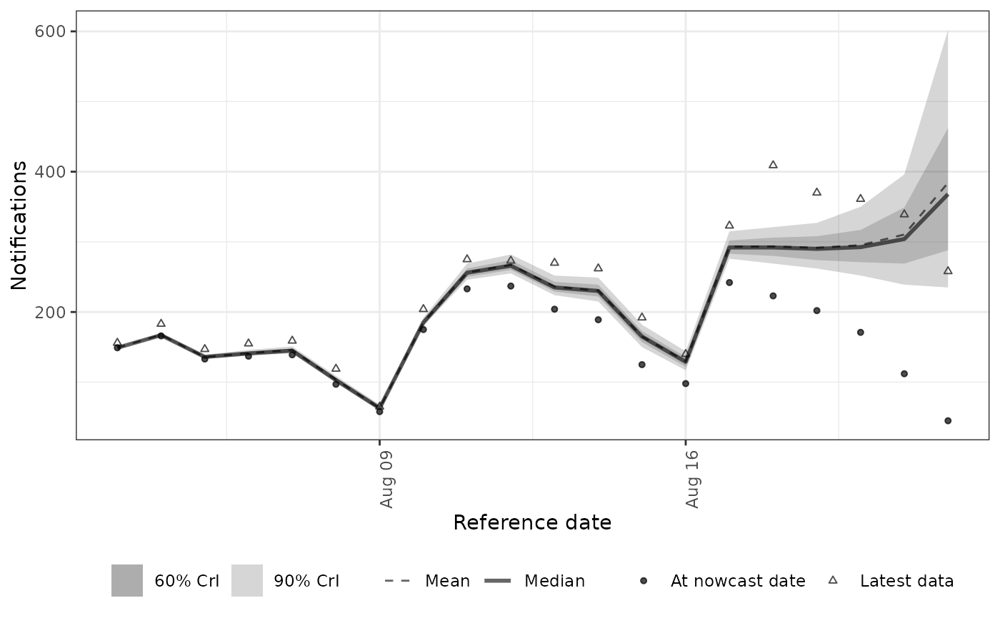
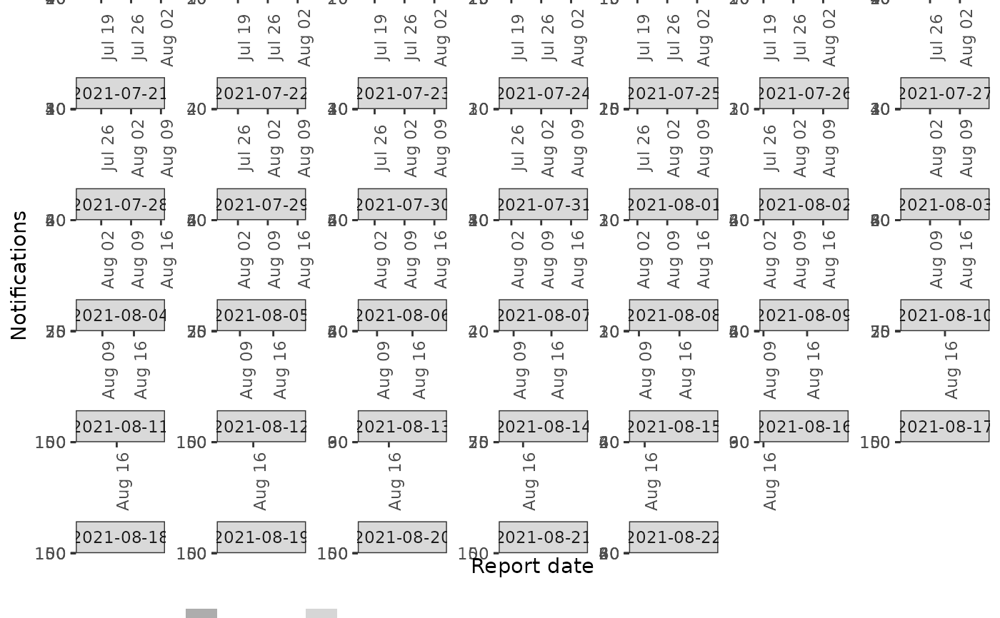

plot method for class "epinowcast".
Arguments
- x
A
data.tableof output as produced byepinowcast().- latest_obs
A
data.frameof observed data which may be passed to lower level methods.- type
Character string indicating the plot required; enforced by
base::match.arg(). Currently supported options:"nowcast" which plots the nowcast for each dataset along with latest available observed data using
enw_plot_nowcast_quantiles(),"posterior_prediction" which plots observations reported at the time against simulated observations from the model using
enw_plot_pp_quantiles().
- log
Logical, defaults to
FALSE. Should counts be plot on the log scale.- ...
Additional arguments to the plot function specified by
type.
See also
Other epinowcast:
epinowcast(),
summary.epinowcast()
Plotting functions
enw_plot_nowcast_quantiles(),
enw_plot_obs(),
enw_plot_pp_quantiles(),
enw_plot_quantiles(),
enw_plot_theme()
Examples
nowcast <- enw_example("nowcast")
latest_obs <- enw_example("obs")
# Plot nowcast
plot(nowcast, latest_obs = latest_obs, type = "nowcast")

# Plot posterior predictions by reference date
plot(nowcast, type = "posterior_prediction") +
ggplot2::facet_wrap(ggplot2::vars(reference_date), scales = "free")
#> `geom_line()`: Each group consists of only one observation.
#> ℹ Do you need to adjust the group aesthetic?
#> `geom_line()`: Each group consists of only one observation.
#> ℹ Do you need to adjust the group aesthetic?
